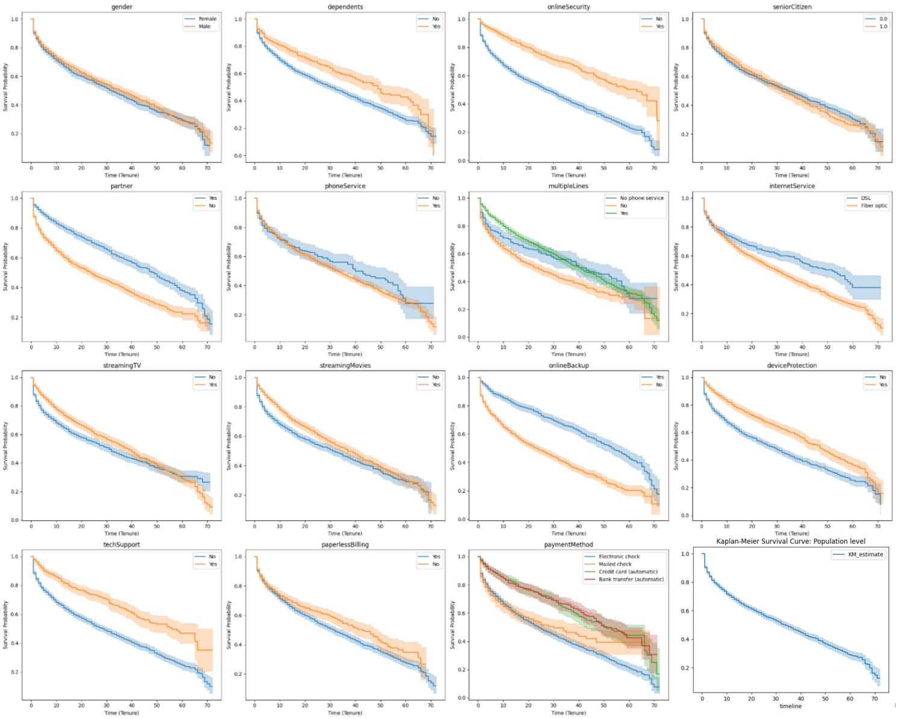
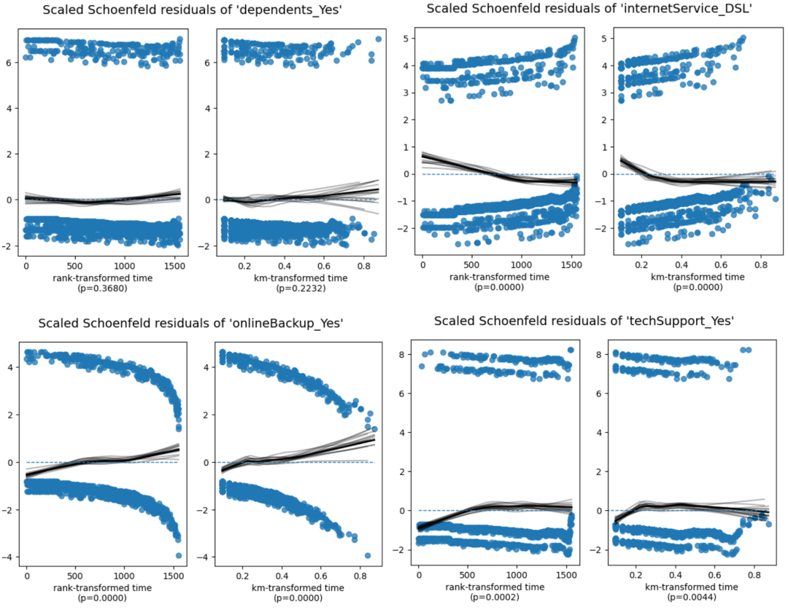
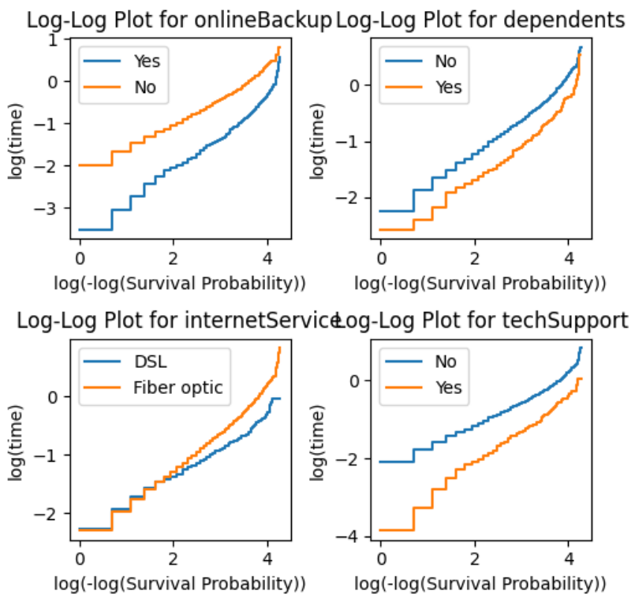
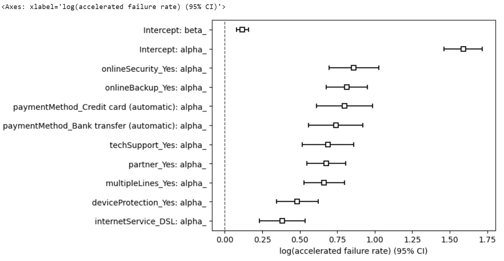
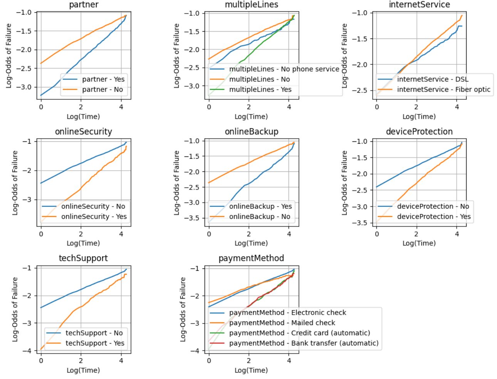
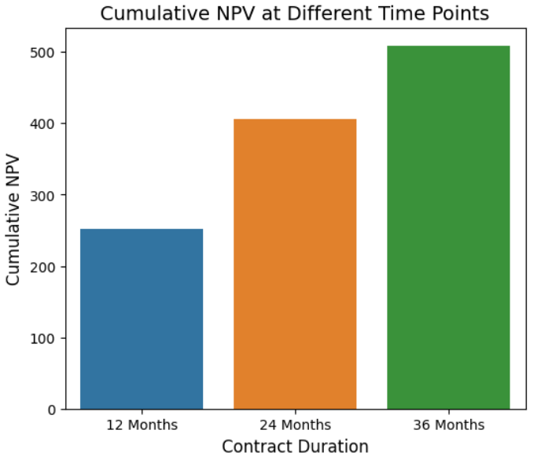
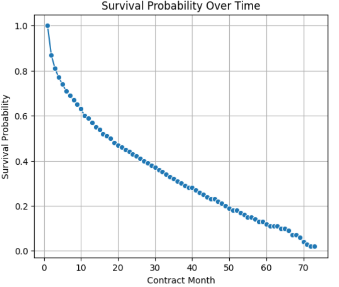

生存分析报告（Survival Analysis）
12111643 施佳慧
生存分析是一组统计方法，用于检查和预测感兴趣事件发生的时间。这种分析形式起源于医疗保健，重点关注死亡时间。从那时起，生存分析已成功应用于全球几乎所有行业的用例。
数据预处理
数据集来自 IBM，旨在模仿一家虚构的电信公司。此数据集中的每条记录代表一个订户，并包含有关其各自的人口统计、服务计划、媒体使用情况和订阅状态的信息。
数据集介绍
客户基本信息
customerID: 客户唯一标识符gender: 客户性别seniorCitizen: 标识客户是否为老年人(1/0)partner: 客户是否有伴侣(Yes/No)dependents: 客户是否有家属(Yes/No)
客户服务使用情况
tenure: 客户使用公司服务的月数phoneService: 是否订阅了电话服务(Yes/No)multipleLines: 是否有多线路服务(Yes/No/No phone service)internetService: 互联网服务提供商类型(DSL, Fiber optic, No)onlineSecurity: 是否使用在线安全服务(Yes/No/No internet service)onlineBackup: 是否使用在线备份服务(Yes/No/No internet service)deviceProtection: 是否有设备保护计划(Yes/No/No internet service)techSupport: 是否有技术支持服务(Yes/No/No internet service)streamingTV: 是否有流媒体电视服务(Yes/No/No internet service)streamingMovies: 是否有流媒体电影服务(Yes/No/No internet service)
合同与账单信息
contract: 合同类型(Month-to-month, One year, Two year)paperlessBilling: 是否使用无纸化账单(Yes/No)paymentMethod: 付款方式(Electronic check, Mailed check, Bank transfer, Credit card)monthlyCharges: 每月费用totalCharges: 总费用
数据转换与筛选
将字符串类型的流失标记churnString("Yes"/"No")转换为数值型churn(1/0) ，使用when().otherwise()条件表达式处理异常值。仅保留按月订阅的客户(contract == 'Month-to-month') ,排除没有互联网服务的客户(internetService != 'No'), 移除原始的churnString列.将原始数据直接保存为Bronze层表，保留数据的原始形态不做任何处理；然后对数据进行清洗转换，包括将流失标记转为数值型、筛选特定合同类型和服务用户，并移除冗余列，最终将处理后的结构化数据存储为Silver表。
Silver:
客户基本信息
| customerID | gender | seniorCitizen | partner | dependents | tenure |
|---|---|---|---|---|---|
| 7590-VHVEG | Female | 0.0 | Yes | No | 1.0 |
| 3668-QPYBK | Male | 0.0 | No | No | 2.0 |
| 9237-HQITU | Female | 0.0 | No | No | 2.0 |
| 9305-CDSKC | Female | 0.0 | No | No | 8.0 |
服务信息
| customerID | phoneService | multipleLines | internetService | onlineSecurity | onlineBackup | deviceProtection | techSupport | streamingTV | streamingMovies |
|---|---|---|---|---|---|---|---|---|---|
| 7590-VHVEG | No | No phone service | DSL | No | Yes | No | No | No | No |
| 3668-QPYBK | Yes | No | DSL | Yes | Yes | No | No | No | No |
| 9237-HQITU | Yes | No | Fiber optic | No | No | No | No | No | No |
| 9305-CDSKC | Yes | Yes | Fiber optic | No | No | Yes | No | Yes | Yes |
合同与账单信息
| customerID | contract | paperlessBilling | paymentMethod | monthlyCharges | totalCharges | churn |
|---|---|---|---|---|---|---|
| 7590-VHVEG | Month-to-month | Yes | Electronic check | 29.85 | 29.85 | 0 |
| 3668-QPYBK | Month-to-month | Yes | Mailed check | 53.85 | 108.15 | 1 |
| 9237-HQITU | Month-to-month | Yes | Electronic check | 70.7 | 151.65 | 1 |
| 9305-CDSKC | Month-to-month | Yes | Electronic check | 99.65 | 820.5 | 1 |
生存概率曲线
Kaplan-Meier（KM）
Kaplan-Meier（KM）估计是一种非参数统计方法，用于估计生存函数（Survival Function），即在给定时间点个体仍然存活的概率。它广泛应用于医学、工程、金融等领域，尤其适用于右删失（Right-Censored数据（即部分个体的最终事件发生时间未知）。
其中：
- ( S(t) )：在时间 ( t ) 时的生存概率
- ( d_i )：在时间 ( t_i ) 发生事件（如死亡、流失）的个体数
- ( n_i )：在时间 ( t_i ) 之前仍处于风险中的个体数（即尚未发生事件或删失）
模型构建
接下来我使用 Kaplan-MeierFitter 进行生存分析，首先定义生存时间 tenure 作为观察时长，并将 churn 转换为事件状态（1 表示客户流失）。然后，我们用这些数据拟合 Kaplan-Meier 模型，并绘制生存曲线，以直观展示客户留存的变化趋势。
T = 观察时长/生存时间(这里使用客户留存月数'tenure')
C = 事件观察状态(这里用'churn'作为事件标志，1表示客户流失)
实验结果
Kaplan-MeierFitter Graph
Log-rank Test Results
| Category | Group | Test Statistic | p-value | -log2(p) |
|---|---|---|---|---|
| Gender | Female Male | 1.61011 | 0.204476 | 2.289995 |
| Dependents | No Yes | 13.405914 | 0.000251 | 11.96099 |
| Online Security | No Yes | 75.800079 | 3.14e-18 | 58.144453 |
| Senior Citizen | 0.0 1.0 | 49.027784 | 2.52e-12 | 38.52764 |
| Partner | No Yes | 257.844159 | 5.06e-58 | 190.331712 |
| Phone Service | No Yes | 0.778505 | 0.377599 | 1.405074 |
| Multiple Lines | No - No phone service | 35.546250 | 2.49e-09 | 28.580824 |
| No - Yes | 411.225536 | 1.98e-91 | 301.307649 | |
| No phone service - Yes | 44.056629 | 3.19e-11 | 34.867600 | |
| Internet Service | DSL - Fiber optic | 85.455399 | 2.37e-20 | 65.193753 |
| Streaming TV | No Yes | 140.761789 | 1.81e-32 | 105.442545 |
| Streaming Movies | No Yes | 170.262183 | 6.48e-39 | 126.858111 |
| Online Backup | No Yes | 300.455875 | 2.62e-67 | 221.179115 |
| Device Protection | No Yes | 169.868512 | 7.90e-39 | 126.572486 |
| Tech Support | No Yes | 25.969416 | 3.47e-07 | 21.459105 |
| Paperless Billing | No Yes | 25.263459 | 5.00e-07 | 20.931298 |
| Payment Method | Bank Transfer (Auto) - Credit Card (Auto) | 0.153545 | 6.95e-01 | 0.524562 |
| Bank Transfer (Auto) - Electronic Check | 55.164654 | 1.11e-13 | 43.036532 | |
| Bank Transfer (Auto) - Mailed Check | 190.000457 | 3.18e-43 | 141.174532 | |
| Credit Card (Auto) - Electronic Check | 45.167592 | 1.81e-11 | 35.686227 | |
| Credit Card (Auto) - Mailed Check | 165.361074 | 7.63e-38 | 123.301883 | |
| Electronic Check - Mailed Check | 72.323100 | 1.83e-17 | 55.603331 |
Payment Method
| Group | Test Statistic | p-value | -log2(p) |
|---|---|---|---|
| Bank Transfer (Auto) - Credit Card (Auto) | 0.153545 | 6.95e-01 | 0.524562 |
| Bank Transfer (Auto) - Electronic Check | 55.164654 | 1.11e-13 | 43.036532 |
| Bank Transfer (Auto) - Mailed Check | 190.000457 | 3.18e-43 | 141.174532 |
| Credit Card (Auto) - Electronic Check | 45.167592 | 1.81e-11 | 35.686227 |
| Credit Card (Auto) - Mailed Check | 165.361074 | 7.63e-38 | 123.301883 |
| Electronic Check - Mailed Check | 72.323100 | 1.83e-17 | 55.603331 |
Top 10 survival probability
| DSL | Value |
|---|---|
| 0 | 1.000000 |
| 1 | 0.902698 |
| 2 | 0.864380 |
| 3 | 0.834702 |
| 4 | 0.810522 |
| 5 | 0.794352 |
| 6 | 0.783900 |
| 7 | 0.776362 |
| 8 | 0.768486 |
| 9 | 0.750833 |
结论
首先，性别对客户流失没有显著影响（p = 0.204476），而有抚养人的客户流失显著低于没有抚养人的客户（p = 0.000251），表明抚养人状态可能是客户留存的一个积极因素。此外，拥有在线安全服务的客户流失显著低于没有该服务的客户（p ≈ 3.14e-18），这表明在线安全服务对于提高客户留存具有显著作用。对于老年客户（p ≈ 2.52e-12），其流失率较高，说明老年人群体在客户流失方面的风险较大。伴侣状态也是一个关键因素，有伴侣的客户流失显著较低（p ≈ 5.06e-58），显示出伴侣在客户留存中的重要作用。相反，电话服务的有无对客户流失没有显著影响（p = 0.377599），表明电话服务对客户流失的影响较小。
在多线路服务方面，选择多线路服务的客户流失显著低于未选择的客户（p ≈ 1.98e-91），而没有电话服务的客户流失率较高，表明多线路服务是留住客户的一个有效手段。互联网服务也对客户流失产生影响，光纤服务用户的流失较低（p ≈ 2.37e-20），而DSL服务用户的流失较高，表明光纤互联网对客户留存有积极作用。电视流媒体和电影流媒体服务的使用也与客户流失相关，选择这些服务的客户流失较低（p ≈ 1.81e-32 和 p ≈ 6.48e-39），体现了流媒体服务对客户留存的重要影响。
此外，在线备份和设备保护服务的客户流失也显著较低（p ≈ 2.62e-67 和 p ≈ 7.90e-39），说明这两项服务在减少客户流失方面发挥了积极作用。技术支持的有无也对客户留存起到了重要作用，有技术支持的客户流失显著较低（p ≈ 3.47e-07）。电子账单服务对客户留存也有显著影响（p ≈ 5.00e-07），选择电子账单的客户流失较低。支付方式方面，不同支付方式的客户流失差异明显，尤其是通过电子支票支付的客户流失显著较低（p ≈ 1.11e-13），而通过邮寄支票支付的客户流失较高（p ≈ 3.18e-43）。
DSL用户的留存率随时间的推移逐渐下降，但初期留存率仍较高（第0月为1.0，第9月为0.750833），表明随着时间的推移，DSL服务的客户可能会逐渐流失。总的来说，客户流失受到多个因素的影响，尤其是是否拥有伴侣、是否使用互联网服务、是否选择在线安全、设备保护和技术支持等服务。
Cox 比例风险模型
模型介绍
Kaplan-Meier 用于估计生存概率，而 Cox 比例风险用于估计风险比。风险比表示两个个体（或群体）之间存在的风险差异。Cox比例风险模型（Cox Proportional Hazards Model）是一种广泛应用于生存分析的回归模型，用于分析影响生存时间的因素。其主要特点是可以处理删失数据，并且不要求事先指定基础生存函数的形式。Cox模型通常用于估计某些变量对生存时间的影响。Cox比例风险模型的基本假设是风险比（hazard ratio）是各个解释变量的线性组合。
模型公式：
其中：
- 是给定协变量 的条件下，时间 处的风险函数（即生存时间的瞬时风险）。
- 是基准风险函数，即当所有协变量为零时的风险函数。
- 是协变量（也称为解释变量、特征），例如年龄、性别、治疗方法等。
- 是需要估计的回归系数。
风险比:
Cox模型中的回归系数 代表了每个变量的影响。为了便于解释，我们可以计算每个变量的风险比（Hazard Ratio, HR）：
风险比 表示在其他变量保持不变的情况下，协变量 增加一个单位时，事件发生的风险比值。
- 如果 ，说明该变量的增大增加了事件发生的风险。
- 如果 ，说明该变量的增大降低了事件发生的风险。
- 如果 ，则该变量对事件发生的风险没有影响。
模型构建
为了使用 Lifelines 库拟合 Cox 比例风险模型，首先对分类列进行单热编码。首先，代码对 telco_pd 数据框中的几个分类变量（dependents、internetService、onlineBackup、techSupport 和 paperlessBilling）进行独热编码（One-Hot Encoding），后面再将这些分类变量转换为多个二进制列，例如 dependents_Yes 和 internetService_DSL，表示该类别是否存在。其后再创建一个新的数据框 survival_pd，其中仅包含进行生存分析所需的变量：churn（客户流失，作为生存分析的事件变量）、tenure（客户留存时间，作为生存时间）、以及几个经过编码的关键变量（dependents_Yes、internetService_DSL、onlineBackup_Yes 和 techSupport_Yes）。
encode_cols = ['dependents','internetService','onlineBackup','techSupport','paperlessBilling']基础信息
| customerID | gender | seniorCitizen | partner | tenure | phoneService | multipleLines |
|---|---|---|---|---|---|---|
| 7590-VHVEG | Female | 0.0 | Yes | 1.0 | No | No phone service |
| 3668-QPYBK | Male | 0.0 | No | 2.0 | Yes | No |
| 9237-HQITU | Female | 0.0 | No | 2.0 | Yes | No |
| 9305-CDSKC | Female | 0.0 | No | 8.0 | Yes | Yes |
| 1452-KIOVK | Male | 0.0 | No | 22.0 | Yes | Yes |
服务与账单信息
| customerID | onlineSecurity | deviceProtection | streamingTV | dependents_No | dependents_Yes | internetService_DSL | internetService_Fiber optic | onlineBackup_No | onlineBackup_Yes | techSupport_No | techSupport_Yes | paperlessBilling_No | paperlessBilling_Yes |
|---|---|---|---|---|---|---|---|---|---|---|---|---|---|
| 7590-VHVEG | No | No | No | True | False | True | False | False | True | True | False | False | True |
| 3668-QPYBK | Yes | No | No | True | False | True | False | False | True | True | False | False | True |
| 9237-HQITU | No | No | No | True | False | False | True | True | False | True | False | False | True |
| 9305-CDSKC | No | Yes | Yes | True | False | False | True | True | False | True | False | False | True |
| 1452-KIOVK | No | No | Yes | False | True | False | True | False | True | True | False | False | True |
实验结果
拟合Cox比例风险模型
模型信息
| 参数 | 值 |
|---|---|
| Model | lifelines.CoxPHFitter |
| Duration Column | 'tenure' |
| Event Column | 'churn' |
| Baseline Estimation | breslow |
| Number of Observations | 3351 |
| Number of Events Observed | 1556 |
| Partial Log-Likelihood | -11315.95 |
| Time Fit Was Run | 2025-03-26 11:56:38 UTC |
回归系数结果
| 变量 | coef | exp(coef) | se(coef) | coef lower 95% | coef upper 95% | exp(coef) lower 95% | exp(coef) upper 95% | z | p | -log2(p) |
|---|---|---|---|---|---|---|---|---|---|---|
| dependents_Yes | -0.33 | 0.72 | 0.07 | -0.47 | -0.19 | 0.63 | 0.83 | -4.64 | <0.005 | 18.12 |
| internetService_DSL | -0.22 | 0.80 | 0.06 | -0.33 | -0.10 | 0.72 | 0.90 | -3.68 | <0.005 | 12.07 |
| onlineBackup_Yes | -0.78 | 0.46 | 0.06 | -0.89 | -0.66 | 0.41 | 0.52 | -13.13 | <0.005 | 128.37 |
| techSupport_Yes | -0.64 | 0.53 | 0.08 | -0.79 | -0.49 | 0.46 | 0.61 | -8.48 | <0.005 | 55.36 |
统计指标
| 指标 | 值 |
|---|---|
| Concordance | 0.64 |
| Partial AIC | 22639.90 |
| Log-Likelihood Ratio Test | 337.77 on 4 df |
| -log2(p) of LL-Ratio Test | 236.24 |
从回归模型的结果来看，影响客户流失的几个重要因素包括是否有家属、网络服务类型、在线备份服务和技术支持服务。有家属的用户相比无家属的用户流失风险更低，可能是由于家庭用户对服务的依赖性更强。选择DSL宽带的用户相比其他类型的宽带用户流失风险更低，这可能与DSL用户的使用习惯或缺乏更优选择有关。订阅在线备份和技术支持服务的用户流失风险明显降低，这表明增值服务可能有助于提高用户粘性。此外，模型的一致性指数为0.64，说明它在一定程度上能够预测用户流失风险。然而，部分变量不满足比例风险假设，例如网络服务类型、在线备份和技术支持服务，建议在后续分析中采用分层方法或加入时间交互项进行调整。总体而言，这些结果表明，企业可以通过推广增值服务、优化家庭用户策略等方式来减少客户流失。
Cox比例风险模型假设检验
| 变量 | 方法 | 统计量 | p 值 | -log2(p) |
|---|---|---|---|---|
| dependents_Yes | km | 1.48 | 0.22 | 2.16 |
| rank | 0.81 | 0.37 | 1.44 | |
| internetService_DSL | km | 20.98 | <0.005 | 17.72 |
| rank | 26.71 | <0.005 | 22.01 | |
| onlineBackup_Yes | km | 17.80 | <0.005 | 15.31 |
| rank | 17.47 | <0.005 | 15.07 | |
| techSupport_Yes | km | 8.09 | <0.005 | 7.81 |
| rank | 13.76 | <0.005 | 12.23 |
变量 internetService_DSL (p < 5e-05)、onlineBackup_Yes (p < 5e-05) 和 techSupport_Yes (p = 0.0002) 不满足比例风险假设。
Schoenfeld 残差图
图中 dependents_Yes 变量的 Schoenfeld 残差随机分布且 p 值较大，符合比例风险假设，而 internetService_DSL、onlineBackup_Yes 和 techSupport_Yes 的残差趋势随时间变化，p 值极小，不满足比例风险假设，建议采用分层 Cox 回归或引入时间交互项进行修正。
对数-对数生存曲线（Log-log plot）
目标变量: km_vars = ["onlineBackup", "dependents", "internetService", "techSupport"]
从 Log-Log 生存曲线图来看，dependents 变量的两条曲线较为平行，符合比例风险假设，而 onlineBackup、internetService_DSL 和 techSupport 变量的曲线明显交叉或不平行，说明它们可能不满足比例风险假设，需要进一步调整模型，如分层分析或引入时间交互项。
加速失效时间模型
模型介绍
加速失效时间模型（AFT模型）是一种常用于生存分析的统计模型，它通过观察影响生存时间的因素来分析个体的生存时间。与Cox比例风险模型（Cox Proportional Hazards Model）不同，AFT模型主要是通过加速或减慢失效时间的方式来描述变量对失效时间的影响。AFT模型是对生存时间进行建模的，它常使用在工业领域，如研究零件寿命受温度的影响，因此把生存时间称为失效时间（Failure Time）。
在AFT模型中，假设失效时间（或生存时间） 与一个给定的协变量 之间存在关系。具体来说，模型可以用下列公式表示：
其中：
- 是失效时间或生存时间。
- 是一个标度参数，通常由数据估计。
- 是待估计的回归系数，代表协变量 对生存时间的影响。
- 是协变量（例如温度、压力等）。
- 是一个误差项，通常假设 来自某种分布，如对数正态分布，即 。
为了更好地理解AFT模型，假设误差项 来自对数正态分布，那么该模型可以表示为：
其中， 的分布为：
AFT模型的核心思想是，协变量对失效时间的影响是通过加速（或减慢）失效过程的方式体现的。例如，在工业工程中，温度过高可能会加速零件的失效，因此在这种情况下，温度的增加会导致失效时间的加速。
模型构建
与cox回归模型相同，首先对数据集进行了独热编码，这里便不再阐述。再使用 Log-Logistic AFT（加速失效时间）模型 对客户流失（churn）进行生存分析，以评估不同特征对客户留存时间（tenure）的影响，并计算中位生存时间。
survival_pd = encoded_pd[['churn', 'tenure', 'partner_Yes', 'multipleLines_Yes', 'internetService_DSL', 'onlineSecurity_Yes', 'onlineBackup_Yes', 'deviceProtection_Yes', 'techSupport_Yes', 'paymentMethod_Bank transfer (automatic)', 'paymentMethod_Credit card (automatic)']]实验结果
拟合加速失效时间模型
| 指标 | 值 |
|---|---|
| 模型 | lifelines.LogLogisticAFTFitter |
| 生存时间列 | 'tenure' |
| 事件列 | 'churn' |
| 观测数 | 3351 |
| 事件数 | 1556 |
| 对数似然 | -6838.36 |
| 拟合时间 | 2025-03-26 12:17:08 UTC |
| 变量 | coef | exp(coef) | se(coef) | coef lower 95% | coef upper 95% | exp(coef) lower 95% | exp(coef) upper 95% | z | p | -log2(p) |
|---|---|---|---|---|---|---|---|---|---|---|
| deviceProtection_Yes | 0.48 | 1.62 | 0.07 | 0.35 | 0.62 | 1.41 | 1.86 | 6.88 | <0.005 | 37.25 |
| internetService_DSL | 0.38 | 1.47 | 0.08 | 0.23 | 0.53 | 1.26 | 1.71 | 4.98 | <0.005 | 20.59 |
| multipleLines_Yes | 0.66 | 1.94 | 0.07 | 0.53 | 0.80 | 1.70 | 2.22 | 9.64 | <0.005 | 70.70 |
| onlineBackup_Yes | 0.81 | 2.25 | 0.07 | 0.68 | 0.95 | 1.97 | 2.59 | 11.63 | <0.005 | 101.50 |
| onlineSecurity_Yes | 0.86 | 2.37 | 0.09 | 0.69 | 1.03 | 2.00 | 2.80 | 10.12 | <0.005 | 77.60 |
| partner_Yes | 0.68 | 1.97 | 0.07 | 0.55 | 0.81 | 1.73 | 2.24 | 10.21 | <0.005 | 78.93 |
| paymentMethod_Bank transfer (automatic) | 0.74 | 2.10 | 0.09 | 0.56 | 0.92 | 1.75 | 2.51 | 8.05 | <0.005 | 50.07 |
| paymentMethod_Credit card (automatic) | 0.80 | 2.22 | 0.10 | 0.61 | 0.99 | 1.84 | 2.68 | 8.36 | <0.005 | 53.81 |
| techSupport_Yes | 0.69 | 1.99 | 0.09 | 0.52 | 0.86 | 1.68 | 2.36 | 7.90 | <0.005 | 48.37 |
| Intercept | 1.59 | 4.91 | 0.07 | 1.46 | 1.72 | 4.32 | 5.58 | 24.47 | <0.005 | 436.88 |
Beta 估计值
| 变量 | coef | exp(coef) | se(coef) | coef lower 95% | coef upper 95% | exp(coef) lower 95% | exp(coef) upper 95% | z | p | -log2(p) |
|---|---|---|---|---|---|---|---|---|---|---|
| Intercept | 0.12 | 1.13 | 0.02 | 0.08 | 0.16 | 1.08 | 1.17 | 5.71 | <0.005 | 26.42 |
模型评估指标
| 指标 | 值 |
|---|---|
| 一致性指数 (Concordance) | 0.73 |
| AIC (赤池信息准则) | 13698.72 |
| 对数似然比检验 | 877.49 on 9 df |
| -log2(p) of ll-ratio test | 605.78 |
Log-Logistic AFT 模型的结果表明，多个变量对用户流失时间（tenure）有显著影响，所有特征的 exp(coef) > 1，说明它们都与更长的用户留存时间正相关。例如，onlineSecurity_Yes (exp(coef) = 2.37) 和 onlineBackup_Yes (exp(coef) = 2.25) 对留存时间的影响较大，说明使用这些服务的用户更可能长期留存。此外，模型的一致性指数（Concordance = 0.73）表明模型具有较好的预测能力，总体而言，该模型能够较好地解释影响用户流失的因素。
加速失效时间模型假设检验
从Log-Logistic AFT 图像中可以看出，在线安全、在线备份、技术支持、自动支付等因素显著延长了客户留存时间，其中 在线安全和在线备份的影响最大。所有变量的影响均为正，说明它们有助于减少用户流失，且统计上显著。
从 Log-Log 生存曲线图来看，除了Internetservice所有变量的曲线都交叉或不平行，说明它们可能不满足比例风险假设，需要进一步调整模型。
客户终身价值
生命周期价值（LTV）
为了预测电信客户的生命周期价值（LTV）。它通过Cox比例风险模型计算客户留存概率，并基于用户输入的客户特征（如是否开通技术支持、宽带类型等）和折现率，动态生成包含以下内容的财务分析表：逐月生存概率、预期利润、净现值（NPV）以及累计NPV，同时可视化展示12/24/36个月的关键投资回报节点，帮助企业量化不同客户群的经济价值。
| Contract Month | Survival Probability | Monthly Profit for the Selected Plan | Avg Expected Monthly Profit | NPV of Avg Expected Monthly Profit | Cumulative NPV |
|---|---|---|---|---|---|
| 1 | 1.00 | 30 | 30.0 | 30.00 | 30.00 |
| 2 | 0.87 | 30 | 26.1 | 25.88 | 55.88 |
| 3 | 0.81 | 30 | 24.3 | 23.90 | 79.78 |
| 4 | 0.77 | 30 | 23.1 | 22.53 | 102.31 |
| 5 | 0.74 | 30 | 22.2 | 21.48 | 123.79 |
| 6 | 0.71 | 30 | 21.3 | 20.43 | 144.22 |
| 7 | 0.69 | 30 | 20.7 | 19.69 | 163.91 |
| 8 | 0.67 | 30 | 20.1 | 18.97 | 182.88 |
| 9 | 0.65 | 30 | 19.5 | 18.25 | 201.13 |
| 10 | 0.63 | 30 | 18.9 | 17.54 | 218.67 |
| 11 | 0.60 | 30 | 18.0 | 16.57 | 235.24 |
| 12 | 0.59 | 30 | 17.7 | 16.16 | 251.40 |
| 13 | 0.57 | 30 | 17.1 | 15.48 | 266.88 |
| 14 | 0.55 | 30 | 16.5 | 14.81 | 281.69 |
| 15 | 0.54 | 30 | 16.2 | 14.42 | 296.11 |
| 16 | 0.52 | 30 | 15.6 | 13.77 | 309.88 |
| 17 | 0.51 | 30 | 15.3 | 13.40 | 323.28 |
| 18 | 0.50 | 30 | 15.0 | 13.03 | 336.31 |
| 19 | 0.48 | 30 | 14.4 | 12.40 | 348.71 |
| 20 | 0.47 | 30 | 14.1 | 12.04 | 360.75 |
| 21 | 0.46 | 30 | 13.8 | 11.69 | 372.44 |
| 22 | 0.45 | 30 | 13.5 | 11.34 | 383.78 |
| 23 | 0.44 | 30 | 13.2 | 11.00 | 394.78 |
| 24 | 0.43 | 30 | 12.9 | 10.66 | 405.44 |
| 25 | 0.42 | 30 | 12.6 | 10.32 | 415.76 |
存活概率下降趋势明显：随着合同月份的增加，存活概率（Survival Probability）从 1.00 逐渐下降到 0.42，表明客户流失随着时间的推移而增加。
平均期望月利润下降：由于存活概率的降低，客户平均每月可带来的期望利润也逐步减少，从 30 降到 12.6。
净现值（NPV）随时间增长但增速放缓：累积 NPV 从 30 增长到 415.76，但增幅随时间推移逐渐变缓，表明随着客户流失，长期收益受到影响。
客户流失影响长期收益：尽管每月利润固定，但因流失率较高，长周期客户的累计利润贡献降低，因此提高客户留存率对长期收益至关重要。
NPV 图表
 从图中可以看出，尽管累积 NPV 随时间增长，但增长速率逐渐放缓。这是由于随着时间的推移，存活的客户数量减少，导致未来现金流的折现值逐步降低。在后期，随着存活概率下降，NPV 增长曲线趋于平稳，说明客户流失对企业的长期收益产生较大影响。因此，提高客户留存率（如优化服务质量、提供长期激励）对于维持持续增长至关重要。
总结
本分析使用来自 IBM 的模拟电信公司数据集，每条记录代表一位订户，包含人口统计、服务计划、媒体使用及订阅状态等信息。研究重点在于客户的服务期限和流失情况，以评估影响客户生命周期的关键因素。采用 Kaplan-Meier 估计与对数秩检验分析不同客户群体的生存概率，利用 Cox 比例风险模型衡量各因素对客户流失的影响，并通过加速失效时间（AFT）模型评估变量对客户生命周期的作用。最终，生存分析结果被用于计算客户终身价值（CLV），为业务优化和客户管理提供数据支持。